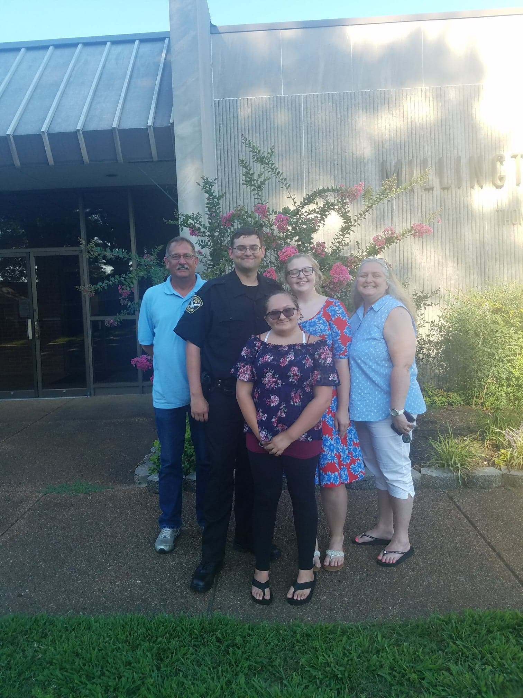

Hello everyone,
My name is Christopher Pace, but like on here many people know me by Cody. I ask for just a minute of your time as I am officially
announcing my candidacy for the office of Alderman. I have lived here since 1999 (so almost my entire life).
I was a member of Atoka Scout Troop 60 for many years and while in scouting I received my Eagle Scout rank. I graduated from Brighton High School in 2013,
and I currently am in school for software engineering (graduate in December). I was a Reserve Officer for Millington Police Dept before leaving to finish school.

My Campaign